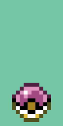
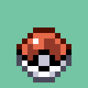
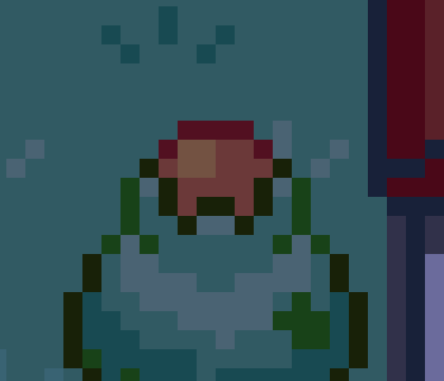
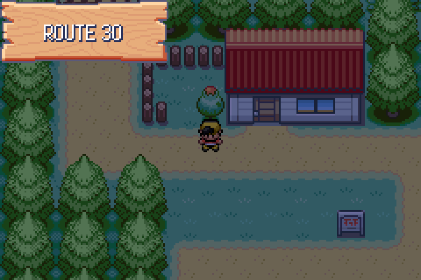
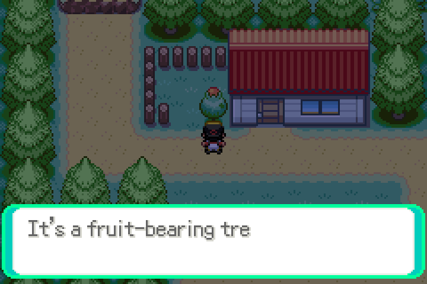
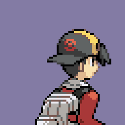
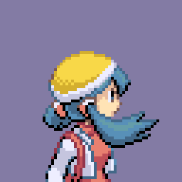
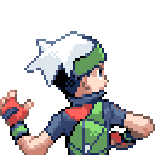
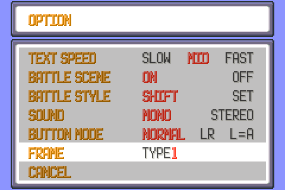
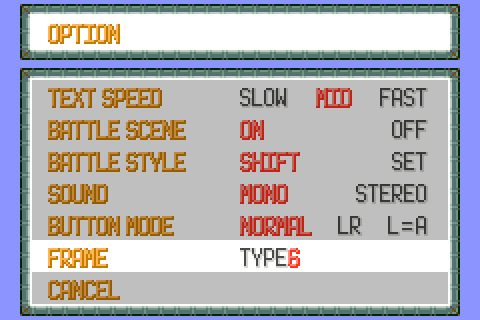

Six lines from observations.txt. Four are fixed and evidenced below;
two — the negative-coloured NPCs and the intro text box — are still open and their lines
have been left in the file. Captures are raw mGBA frames from
tools/playtest/playtest.py against the rebuilt ROM, nearest-neighbour upscaled.
Status: not fixed. No NPC reproducing this was found in the maps reachable from a
fresh save (New Bark Town, Professor Elm's lab, Route 30). What the audit did turn up is a
list of object events that pair one side's art with the other side's palette — the merge kept
expansion's Hoenn sprite sheets while npc_1.pal…npc_4.pal are
CrystalDust's. That is the shape a "negative" would take, but it needs the specific NPC to
confirm. Which map and which NPC would settle it in one capture.
Cause. gObjectEventGraphicsInfo_ItemBall was lost in the merge while
graphics/object_events/pics/misc/item_ball.png survived — the
table-lost-but-assets-kept variant. OBJ_EVENT_GFX_ITEM_BALL therefore pointed at
expansion's gObjectEventGraphicsInfo_PokeBall: an 80×32 five-frame
follower ball drawn 16×32 with OBJ_EVENT_PAL_TAG_NPC_3. NPC 3
in this tree is CrystalDust's palette, not expansion's, so the ball came out in whatever
colours CrystalDust happens to keep at those indices.
Change. Restored the info struct (16×16, one frame,
OBJ_EVENT_PAL_TAG_NPC_4, PALSLOT_NPC_4, sAnimTable_Inanimate),
its pic table and its INCGFX_U32, and pointed
OBJ_EVENT_GFX_ITEM_BALL back at it. OBJ_EVENT_GFX_POKE_BALL keeps
expansion's follower ball, which is what that entry is for.
Fixed. Left: the old pairing rendered offline (follower sheet under npc_3). Middle: the restored pairing (item ball under npc_4). Right: in game, the item ball on Route 30 at night.



Cause. src/field_control_avatar.c is expansion's copy, and expansion has
no BG_EVENT_FRUIT_TREE. Every supporting piece of CrystalDust's fruit trees was
already here — src/fruit_tree.c, the
GetFruitTreeItem/SetFruitTreeMetatileTakenFromId specials, D83's
metatile wiring, the fruit_tree bg events in the map JSON — but the one
case that dispatches them was not. A fruit-tree bg event fell through to the
switch's return bgEvent->bgUnion.script;, so the small integer tree id was
executed as a script pointer.
case BG_EVENT_FRUIT_TREE:
gSpecialVar_0x8004 = bgEvent->bgUnion.berryTreeId;
return EventScript_FruitTree;
Change. Added that arm, ported CrystalDust's EventScript_FruitTree block
into data/scripts/obtain_item.inc, its three strings into
data/text/obtain_item.inc, and the extern into include/event_scripts.h.
Fixed. Route 30, facing the tree at (7, 45): the script runs instead of crashing.


Cause. GetPlayerTrainerPic in src/trainer.c is expansion's.
GAME_VERSION is VERSION_EMERALD in this tree, so every ordinary battle
took GetEmeraldTrainerPic and got Brendan or May. CrystalDust's Gold and Kris back
pics were never referenced by the trainer-pic table at all.
Change. Added gTrainerBackPic_Gold/_Kris and their palettes
to src/data/graphics/trainers.h, gave them CrystalDust's five-frame throw
(sBackAnims_Johto), filled in TRAINER_PIC_GOLD and
TRAINER_PIC_KRIS, and pointed the VERSION_EMERALD branch at a new
GetJohtoTrainerPic.
Deliberate drop. GetEmeraldTrainerPic is deleted, not kept unused — the
build treats an unused static as an error. Brendan and May are no longer reachable as player
back pics on the Emerald branch. They remain in the table for linked saves.
Fixed (built, not yet seen in a battle). The harness cannot reach a wild encounter from a fresh save — the player has no party until Elm hands over a starter, so this is the sheet that is now wired in, not a capture of it in use. Frame 0 of Gold and Kris, beside the Brendan sheet that was showing.



Status: not fixed. Narrowed, though. The ordinary field box is correct: in
Professor Elm's lab the row above the window reads tiles
0x201, 0x203, 0x204×26, 0x205, 0x206 at palette 15, which is exactly
WindowFunc_DrawDialogueFrame over gMessageBox_Gfx at
DLG_WINDOW_BASE_TILE_NUM, and it renders as a clean rounded box (see the Route 30
capture above). The intro's box, drawn by src/main_menu.c at
BIRCH_DLG_BASE_TILE_NUM (0xFC), comes out as
0xFC, 0xFD, 0xFE×26, 0xFF, 0x100 — the same five-piece
shape but consecutive tile numbers, which no frame function in
src/menu.c produces. So the intro is drawing from a different tile base than the
one LoadMessageBoxGfx loaded. The remaining work is to find what re-points it.
Cause. src/option_menu.c is expansion's: it loads the window border once
at init and never again, so moving the FRAME cursor changed the number on screen while the
menu's own border stayed on the saved style. CrystalDust reloads both from the input handler.
Change. The MENUITEM_FRAMETYPE arm now reloads tiles and palette at the
same offsets init uses (0x120 bytes to 0x1A2,
BG_PLTT_ID(7)) whenever the selection changes.
Fixed. TYPE 1 and TYPE 6, same visit to the menu.

